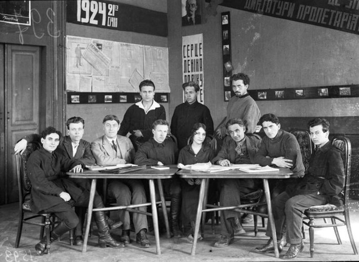
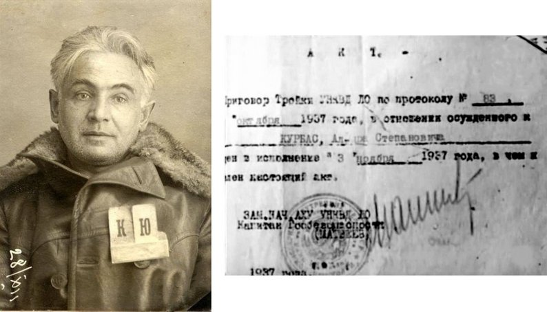
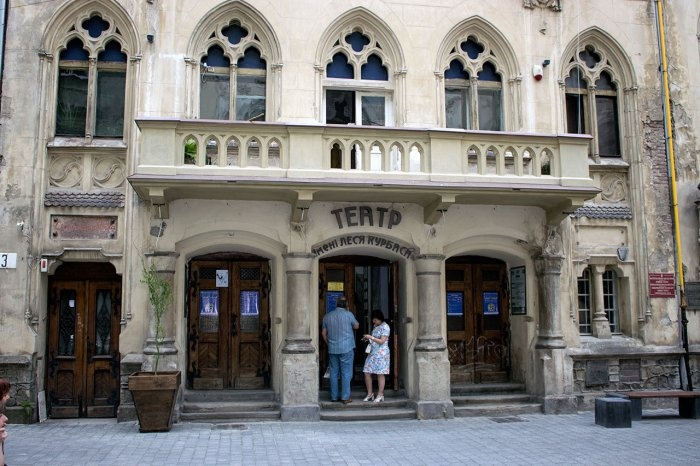

Лесь Курбас

1887-1937
«Театр має бути таким, яким суспільство має бути завтра.»
1887-1937
«Театр має бути таким, яким суспільство має бути завтра.»
Лесь Курбас, безперечно, є знаковою постаттю в історії українського мистецтва, насамперед як видатний театральний режисер. Його новаторський підхід до сценічного дійства, глибоке розуміння драматургії та прагнення до створення національного модерного театру мали величезний вплив на розвиток української культури XX століття. Заснований ним театр "Березіль" став справжньою лабораторією мистецьких пошуків, де втілювалися сміливі експерименти з формою та змістом, відкривалися нові імена акторів і драматургів. Творчість Курбаса вирізнялася філософською глибиною, гостротою соціальних питань та естетичною витонченістю, що вивело український театр на європейський рівень.
На жаль, яскравий творчий шлях Леся Курбаса трагічно обірвався. Він став однією з численних жертв сталінського терору в рамках так званого "Розстріляного відродження" – знищення цвіту української інтелігенції. Його арешт у 1933 році та подальша розправа стали символом нищення національної самобутності та культурного розквіту України. Попри фізичне знищення, мистецька спадщина Леся Курбаса живе й донині, надихаючи нові покоління митців та нагадуючи про трагічні сторінки української історії.
Народився 25 лютого 1887 року в місті Самбір (тепер Львівської області) у родині акторів галицького театру Степана та Ванди Курбасів (за сценою Яновичі). Батько його, хоча й був мандрівним українським актором, проте і в бідності своїй прагнув дати Олександрові гарну освіту.
Лесь Степанович навчався у Тернопільській гімназії, у Віденському та Львівському університетах. Тому цілком природно, що Лесь увібрав у себе все те, що могла дати йому європейська культура. Вже тоді Курбас мріяв працювати в Надніпрянській Україні, де існував сильний демократичний театр Садовського (Київ) і де поруч була висока театральна культура.
1916 року його мрія здійснилась, він вступає до цього театру. Акторська творчість Курбаса в театрі Миколи Садовського обіцяла розвинутися, але сталося так, що він приніс свій акторський талант у жертву режисерському. Головна увага й енергія молодого митця були скеровані на організацію студії молодих акторів, з якої виріс згодом Молодий театр. Назва "Молодий театр" з'явилася вже влітку 1917 року. Молодий театр — це театр пошуків нових форм втілення сучасної та класичної драматургії. З цього театру взяли початок кілька українських театрів.
Влітку 1920-го Лесь Курбас зібрав своїх кращих акторів, хто добровільно приєднався з Київського театру ім Шевченка, і під назвою «Кийдрамте» (Київський драматичний театр) трупа почала своє турне по містах Київщини. Спочатку осіли у Білій Церкві, потім в Умані.
Лесь Курбас був засновником спочатку політичного (1922—1926), а потім і філософського (1926—1933) театру в Україні. У виставах свого філософського театру "Березіль" (Харків) Курбас малює всесвіт, де головним стає особлива довіра до життя людини у всіх його суперечностях.
Лесь Курбас і "березільці" знайшли свого драматурга, п'єси якого були співзвучні їхнім естетичним засадам. Таким драматургом став Микола Гурович Куліш. Першою його п'єсою, що побачила світло рампи на сцені "Березолю", стала «Комуна у степах» (Київ). Творча співпраця тривала і в Харкові.
Кульмiнацiя здобуткiв Курбаса пов'язана з драматургом Миколою Кулiшем (1892-1937) i художником Вадимом Меллером (1884--1962).
У Києві "Березіль" мав під своїм крилом майстерні, плинні півавтономні одиниці. У Харкові все було під одним дахом і під одним проводом — Курбасовим. У театрі діяв мюзик-хол (спектаклі "Шпана", "Алло на хвилі", "Чотири Чемберлени"), агітпроп. Було підготовлено серію "Костюмовані історії" (спектаклі "Жакерія", "Сава Чалий", "Король бавиться", "Змова Фієско").
П'єси М.Куліша «Народний Малахій», «Мина Мазайло», на жаль, не знайшли розуміння у критики. Проти Леся Курбаса були висунуті звинувачення в "похмурості", викривленні оптимістичної радянської дійсності.
Багато чого з творчих пошуків Курбаса не розумілося широкими масами глядачів. Це стосується і його вистави «Маклена Граса», яка досягає справжньої філософської глибини. Але незважаючи на несприятливу для творчості атмосферу нерозуміння, недоброзичливості, Лесь Курбас не занепадав духом, він до останньої можливості вів боротьбу з поширеними у той час тенденціями спрощенства, вульгаризації мистецтва. Опоненти ж щонайменшу невдачу Л. Курбаса завжди розцінювали як цілковитий провал театру.
Можливо, саме тому, що режисер не відступив, не поступився своїми переконаннями, його було наклепницьки обмовлено, звільнено з посади керівника "Березолю" і заарештовано у Москві, де він кілька місяців працював у єврейському театрі на Малій Бронній.
Його було вислано на будівництво Біломорсько-Балтійського каналу на Медвежу Гору, потім його відправили на Соловки. 1937 року після повторного суду його було розстріляно, а 1957 року реабілітовано. Посмертно.
1989 року на фасаді Харківського державного академічного українського драматичного театру ім. Т. Г. Шевченка було встановлено меморіальну дошку в пам'ять про Леся Курбаса, а "Мала сцена" театру знову отримала назву "Березіль".

У Львові працює один з найкращих театрів України — Львівський академічний театр імені Леся Курбаса.
